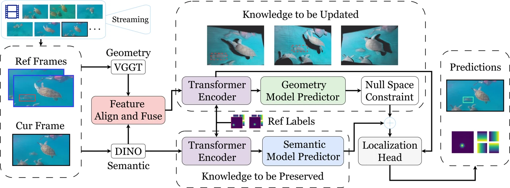
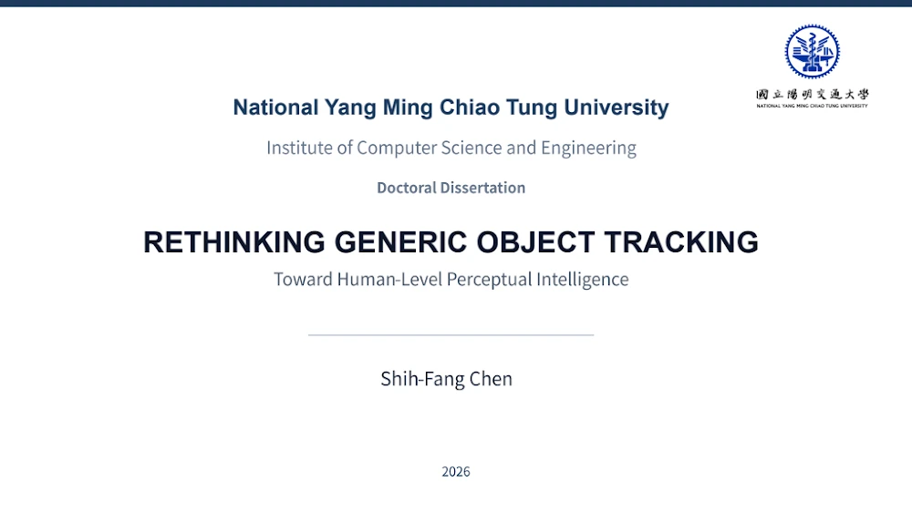

ICLR 2026
GOT-Edit: Geometry-Aware Tracking
Online model editing brings 3D geometry into adaptive 2D video perception.
I'm a computer vision and machine learning researcher and engineer, interested in making visual perception robust, adaptive, and generalizable in the real world. My work spans multimodal learning, spatial intelligence, video understanding, and vision foundation models.
I received my Ph.D. in Computer Science from National Yang Ming Chiao Tung University in 2026, with doctoral research at NYCU and Academia Sinica. I develop methods for online adaptation and object tracking, and have built and deployed industrial vision systems.
My research connects self-supervised learning, parameter-efficient fine-tuning (PEFT), and test-time adaptation for object and point tracking. My first-author work includes GOT-Edit (ICLR 2026), GOT-JEPA (IEEE TCSVT 2026), and PiVOT (IEEE TMM 2025).
I'm exploring opportunities in computer vision, machine learning, and AI research and engineering.
Visual & Video Perception, Multimodal Learning, Representation Learning, Self-Supervised Learning, Parameter-Efficient Fine-Tuning (PEFT), Foundation Models, Post-Training, Test-Time Adaptation, Visual Tracking, Spatial Intelligence

Online model editing brings 3D geometry into adaptive 2D video perception.

Browse slidesMy research on visual prompting, model-predictive learning, and cross-modal adaptation.
Read the slides belowInternational Conference on Learning Representations (ICLR), 2026
Designed, developed, and open-sourced a multimodal visual/video perception system combining 3D geometry from VGGT/DA3 with DINO semantics for reliable cross-modal test-time adaptation in dynamic environments.
IEEE Transactions on Circuits and Systems for Video Technology (TCSVT), 2026
Designed, developed, and open-sourced an adaptive, occlusion-aware visual/video perception system using self-supervised pretraining for test-time adaptation and point-tracking adaptation for occlusion reasoning.
IEEE Transactions on Multimedia (TMM), 2025
Designed, developed, and open-sourced an automated visual prompting system for visual/video perception, leveraging CLIP contrastive knowledge for test-time target–distractor discrimination and adaptation.
Rethinking Generic Object Tracking Toward Human-Level Perceptual Intelligence
Browse the slides here, or open the full-size viewer.
NYCU / Academia Sinica · Doctoral research fellowship
Led research from problem formulation to model design, training, evaluation, and open-source release. Built efficient pipelines for 20M+ training samples and evaluated on 1M+ test video samples across seven public benchmarks.
Yuan Ze University · Full-time
Developed and deployed real-time edge vision systems for 3D interaction, pose training, pitching analysis, and banknote reconstruction for industry partners.
Yuan Ze University · Master's industry–academia research
Designed and deployed a production system for PCB stacked-substrate counting and measurement, automating manual inspection and contributing to patented technologies.
Infrastructure. Administered 10 GPU servers supporting 30 users at NYCU VLLAB (2021–2026).
Reviewed 40+ manuscripts for the following venues: